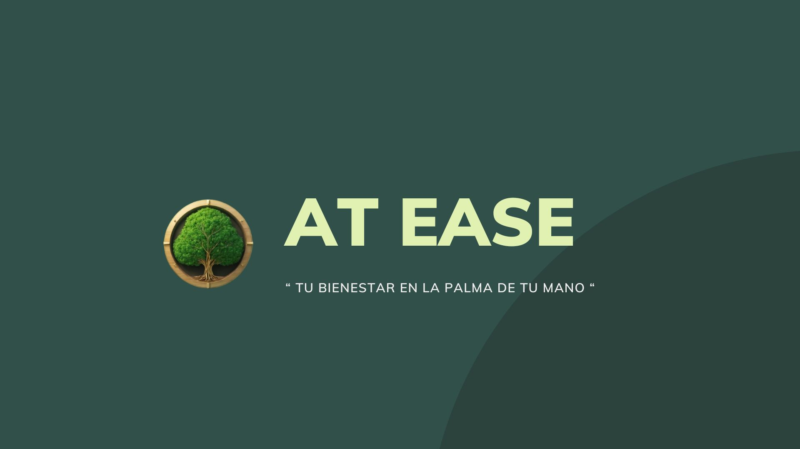
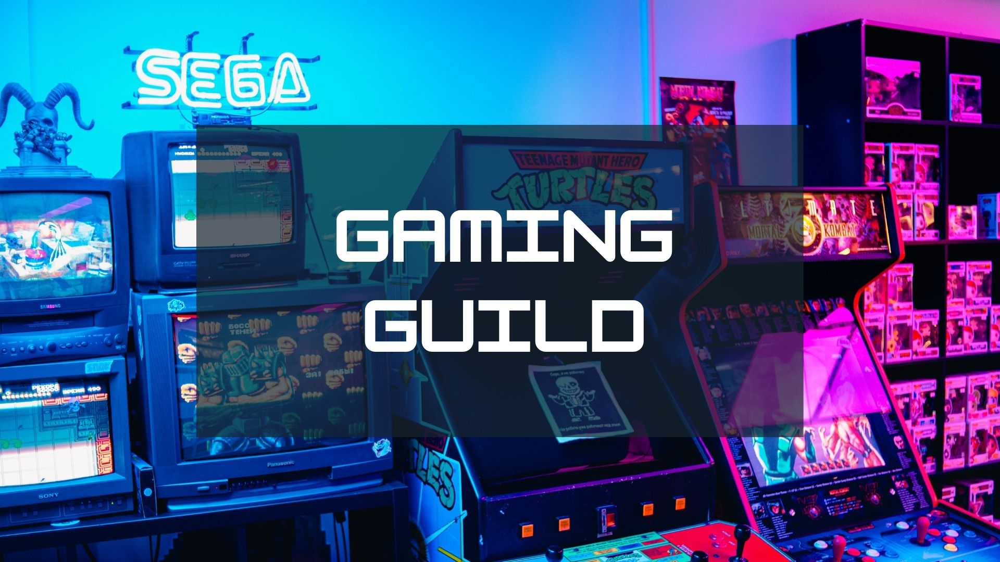

Juan Pablo Rivadeneira Lara
San Rafael, Quito, Ecuador · 0960733333 · juanparivadeneira@gmail.com
Diseñador y desarrollador web con experiencia en medios interactivos y una pasión por crear soluciones innovadoras para negocios y usuarios.
Experiencia
Asistente de Ingeniería en Sistemas
CNSColaboré en el desarrollo de una aplicación de inventario utilizando Ionic, JavaScript, Node y Firebase. Me enfoqué en mejorar la interfaz de usuario y optimizar la funcionalidad de la aplicación para facilitar el seguimiento de inventarios.
Educación
Licenciatura en Diseño Gráfico en Medios Interactivos
Universidad San Francisco de QuitoGraduado en 2023. Durante mi tiempo en la universidad, desarrollé habilidades en diseño visual, programación web y creación de contenido multimedia.
Habilidades
Lenguajes de Programación & Herramientas
Metodologías de trabajo
- Diseño responsive, enfocado en dispositivos móviles
- Desarrollo ágil y gestión de proyectos
- Consultoría y estrategia de social media
- Diseño de interfaces y experiencia de usuario (UI/UX)
Proyectos
At Ease
 Aplicación móvil de bienestar mentalDesarrollé una aplicación móvil llamada "At Ease", enfocada en el bienestar mental. La aplicación incluye funcionalidades como un diario personal, consejos psicológicos, sesiones de meditación y ejercicios de mindfulness.
Gaming Guild
 Plataforma para creadores de videojuegosCreé "Gaming Guild", una plataforma web donde los creadores de videojuegos pueden publicar, comentar y descargar videojuegos. Utilicé tecnologías como HTML, CSS, Angular y MongoDB.